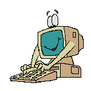
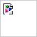

Über Uns

Wir sind Nimblecraft – ein Softwareunternehmen mit Sitz in Bonn und Filialen in Hamburg und Białystok
(PL).
Softwareentwicklung ist unsere Leidenschaft. Wir verlassen uns auf Java, Open Source – und nicht zuletzt
auf unser erfahrenes Team. All dies setzen wir ein, um für unsere Kunden im Raum Köln/Bonn und Hamburg
geschäftskritische Software zu erstellen oder Sie in Fragen der Architektur, der Werkzeuge oder des
Vorgehens zu beraten.
Angebot
Produktentwicklung
Sie wollen eine mobile oder webbasierte Anwendung umsetzen, die es nicht als Standardlösung gibt? Wir
unterstützen Sie im gesamten Ablauf von der Ideenfindung bis zum fertigen Produkt. Wir entwickeln
die
Software agil mit schnellen Feedbackzyklen. Wir sind die Spezialisten für Technik und unterstützen
Entscheidungen konstruktiv mit kritischen Fragen und brillanten Lösungsideen. Lean Startup oder
Scrum?
Beides! Wenn aus einem MVP ein erfolgreiches Produkt entsteht, können wir skalieren. Wir liefern ein
qualitativ hochwertiges, betriebsfertiges Produkt in der Cloud und stehen für Pflege und
kontinuierliche
Weiterentwicklung bereit.

Digitalisierung
Sie wollen effizienter und moderner werden, neue Potentiale durch Integration bestehender Dienste,
Einsatz von künstlicher Intelligenz und komplexer Automatisierung ausschöpfen? Wir unterstützen Sie,
indem wir Geschäftsmodelle, Daten und Anforderungen analysieren und diese logisch und technisch
hinterfragen. Dabei sind wir konstruktiv und liefern exzellente Lösungsvorschläge. Nach der Analyse
entwickeln wir Services oder ganze Systeme. Wir treiben den Prozess bis zur fertigen Lösung und
lassen unsere Kunden auch im Betrieb nicht allein. Dabei entwickeln wir agil und arbeiten zum
Festpreis.

Consulting
Sie benötigen externe Ressourcen, wollen etwas verändern oder benötigen Rat von Experten? Wir
übernehmen
Entwicklungsarbeiten oder beraten Sie in Fragen der Architektur und der Methodik. Unsere erfahrenen
Mitarbeiter bringen dabei immer ein agiles Mindset mit, arbeiten praxisorientiert und schaffen
Werte:
Vor Ort (nur Hamburg oder Bonn) mit hochqualifizierten Fachkräften in der Software-Entwicklung oder
der
Analyse von Geschäftsprozessen und Daten. So werden Sie in Ihren Prozessen agiler, schneller und
erreichen eine höhere Qualität.
Pflege und Wartung
Sie suchen einen zuverlässigen Partner, der Ihre Systeme pflegt und wartet? Selbstverständlich
übernehmen wir die Pflege für die Lösungen, die wir gebaut haben, sowie für bestehende Java-Systeme.
Bei
Software, die wir entwickelt haben, können wir dank des agilen Vorgehens und den automatisierten
Tests
auch später kleine und große Änderungen und Erweiterungen an der Software preiswert durchführen. So
können Sie die Software lange weiter nutzen und dabei Sicherheitsanforderungen und gesetzliche
Vorgaben
erfüllen.
Unsere Systeme
- sind 24/7 verfügbar
- werden von großen Unternehmen europaweit eingesetzt
- verarbeiten mehrere Millionen Aufrufe am Tag
- bearbeiten Kundendaten von über 50 Millionen Kunden
- werden kontinuierlich integriert und getestet
- haben tausende Benutzer
- werden ständig weiterentwickelt, und das seit über zehn Jahren
- haben Altsysteme abgelöst
- sind vor allem Back-End-Systeme, haben aber auch Front-End Anteile
Unsere Werkzeuge
- Java
- "Der Standard für performante und stabile Serversoftware."
- Spring
- "Hat Dependency Injection im Java Enterprise Umfeld verbreitet und durchgesetzt. JEE und der
anderen Konkurrenz immer einen Schritt voraus."
- Hibernate
- "JPA als Standard, Hibernate als Implementierung – die etablierteste Lösung."
- Jenkins
- "Der Standard für Open Source Continuous Integration."
- Git
- "Über 65 Millionen GitHub Repositories und 24 Millionen registrierte Developer sprechen für
sich."
- SonarQube
- "Das Data-Warehouse für Softwareentwicklung. Sahnehäubchen für Jenkins."
- Gradle
- "Das beste Java Build Tool. Schnellstes Feedback durch inkrementelle und parallele Builds.
Essentiell für Continous Integration."
- Docker
- "In einem Container funktioniert Software auf allen Geräten gleich."
- Kubernetes
- "Automatisierte Skalierung und Orchestrierung von Containern."
- aws
- "Global produktiv sein - und das innerhalb von Minuten."
- TypeScript
- "Alle Vorteile ohne die Nachteile von Javascript."
- Cucumber
- "Das BDD-Tool, mit dem man Spezifikation und Testdokumentation kombiniert."
Unser Team
Deutschland
-  Virginia Bechtel – Grafikdesignerin
- Bastian Dirks – UI/UX Designer
- Hildetraut Ehrenberg – Business Analystin
- Wieland Fleischmann – Entwickler
- Wanke Franka – Assistenz der Standortleitung Hamburg
- Gertraud Freiberg – Business Analystin
- Harribert Holzwarth – Business Analyst
- Bernhardt Israel – Entwickler
- Viviane Kipp – HR Business Partnerin
- Eckard Linn – Entwickler
- Joel Mack – Business Analyst
- Falkhard Mahn – IT Support Engineer
- Janette Meiser – Entwicklerin
- Annetrud Paulus – Entwicklerin
- Elgine Poth – UI/UX Designerin
- Wolfdieter Preis – Assistenz der Geschäftsführung
- Ulvi Schlichtling – Business Analyst
- Bonifaz Schön – Standortleiter
- Hartmund Scholze – Entwickler
- Jobs Testmeyer – Geschäftsführer
- Mathias Reitz – Business Analyst
- Dietfried Witte – Business Analyst
Polen
- Wisław Biskup – Entwickler
- Artur Chalupa – Entwickler
- Antonius Gielgud – Entwickler
- Donat Jankiewicz – Entwickler
- Lucjan Kawecki – Entwickler
- Walter Lasota – Entwickler
- Kwiatosław Pala – Entwickler
- Radomir Rinas – Entwickler
- Eugeniusz Wirkus – Entwickler
- Sofroniusz Zagorski – Entwickler